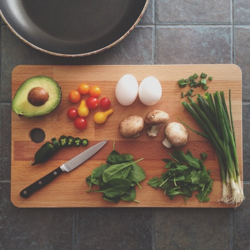

How to Make Your Eco-Friendly Choices

To make eco-friendly choices requires a willingness to change habits, sometimes habits of a lifetime. This may take a bit of planning at first but knowing that you are making a difference to the future of the planet and our children’s future is an incentive to strive to support the earth’s natural resources.
Food production
Food production is the biggest environmental footprint in the world. In 2018, University of Oxford researchers produced a comprehensive analysis of food systems and how they impact the global environment. According to their findings, beef consumption needs to fall up to 90 percent in western countries, which means a radical shift to the most eco-friendly foods, or at least eco-friendly food choices at some level. The research also suggests radical changes in farming practices to avoid exhausting the earth's resources.
Re-usable fruit and vegetable bags
Many of us are already grocery shopping with reusable bags. However, few of us have got as far as swapping the single-use plastic for fruit and vegetables with a reusable alternative. You can make your own bags from mesh to help the cashier see what you have bought, or do not use a bag at all if it is not necessary, such as with cabbage, a cucumber or a couple of apples.
Go organic
Whilst organic foods have become more popular in stores; organic clothing is a rather newer initiative. Going organic means that farmers have avoided pesticides which are not only good for human health, but for the health of the earth. This has been proven over a 30-year study of organic farming compared to conventional farming at land next to each other. Researchers found that organic farming uses 45 per cent less energy, organic crops are more resilient in years of drought, and conventional systems produce 40 per cent more greenhouse gases.
Buy what you eat, eat what you buy
Each year, tonnes of food is sent to landfill where it rots to create more methane. Eco-friendly food choices are not just to deal with the waste of food, but also the loss of all the resources required to make that food. If you buy only what you eat, there will be no need to send any food to landfill sites. It’s one of the simplest solutions you can start implementing immediately, and an incentive is that you will be saving yourself money at the same time.
Energy efficient kitchen appliances
Food storage and preparation takes up energy in your kitchen. When you are ready to look for a new fridge or freezer, check the energy ratings so that you have the most efficient, ecologically-friendly model you can afford. When cooking your meal, use an electric slow-cooker, toaster ovens, or convection ovens for small meals rather than a large stove or oven. A convection oven uses one-third to one-half as much energy as a full-sized oven. Learn about Healthy Kitchen.